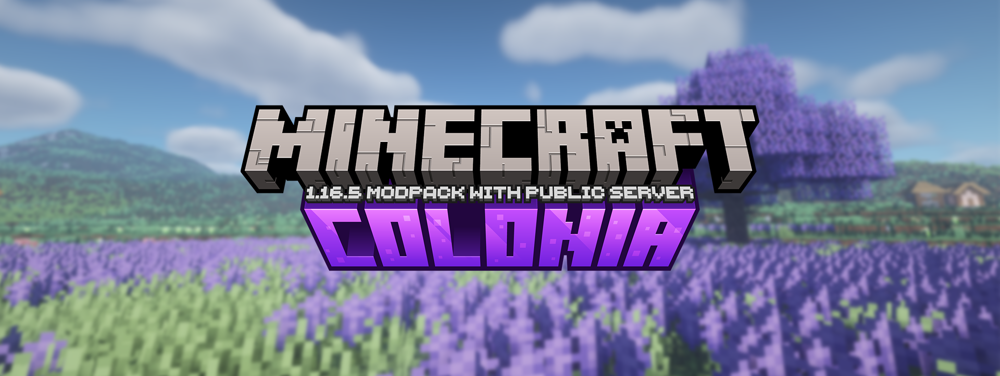

Colonia

Minecraft Version: 1.16.5
Forge Version: 36.2.39
Last Update: 24/10/2022
Modpack Version: 1.13.3
Status: Retired
Download: Curseforge
Mods List
| Name | Type | File Name/Version | Core Mod |
|---|---|---|---|
| Just Enough Items | HUD/GUI | jei-1.16.5-7.7.1.152 | |
| Mouse Tweaks | Fixes | MouseTweaks-2.14-mc1.16.2 | |
| Controlling | Client-side | Controlling-7.0.0.28 | |
| JEI Integration | JEI Addon | jeiintegration_1.16.5-7.0.1.15 | Just Enough Items |
| Just Enough Resources | JEI Addon | JustEnoughResources-1.16.5-0.12.1.128 | Just Enough Items |
| Chisel | Building | Chisel-MC1.16.5-2.0.1-alpha.4 | ConnectedTexturesMod |
| ConnectedTexturesMod | Core | CTM-MC1.16.1-1.1.2.6 | |
| Traveler’s Titles | Client-side | TravelersTitles-1.16.4-1.5 | YUNG’s API |
| YUNG’s API | Core | YungsApi-1.16.4-Forge-13 | |
| YUNG’s Better Mineshafts | World-gen | BetterMineshafts-Forge-1.16.4-2.0.4 | YUNG’s API |
| YUNG’s Better Caves | World-gen | BetterCaves-Forge-1.16.4-1.1.2 | YUNG’s API |
| YUNG’s Bridges | World-gen | YungsBridges-Forge-1.16.4-1.0.1 | YUNG’s API |
| YUNG’s Better Dungeons | World-gen | BetterDungeons-1.16.4-1.2.1 | YUNG’s API |
| YUNG’s Better Strongholds | World-gen | BetterStrongholds-1.16.4-1.2.1 | YUNG’s API |
| YUNG’s Extras | World-gen | YungsExtras-Forge-1.16.4-1.0 | YUNG’s API |
| Falling Leaves | Client-side | Fallingleaves-1.16.3-1.2.4 | |
| Iron Chests | Storage | ironchest-1.16.5-11.2.21 | |
| Iron Furnaces | Gameplay | ironfurnaces-1.16.5-2.7.7 | |
| Dungeons Enhanced | World-gen | dungeons_enhanced-1.16.5-1.8.1 | Structure Gel API |
| Structure Gel API | Core | structure_gel-1.16.5-1.7.8 | |
| MCA Reborn | Gameplay | minecraft-comes-alive-7.0.11-forge | Architectury API |
| Dynamic Surroundings | Client-side | DynamicSurroundings-1.16.5-4.0.5.0 | |
| Sound Filters | Client-side | SoundFilters-0.14_for_1.16.2 | |
| Crafting Tweaks | Client-side | CraftingTweaks_1.16.5-12.2.1 | |
| Inventory Tweaks Renewed | Client-side | invtweaks-1.16.4-1.0.1 | |
| Jade | Client-side | Jade-1.16.4-2.8.3 | |
| FancyMenu | Client-side | fancymenu_forge_2.7.0-1_MC_1.16.2-1.16.5 | Konkrete, Load My Resources |
| Konkrete | Client-side, Core | konkrete_forge_1.3.3_MC_1.16.2-1.16.5 | |
| Load My Resources | Client-side, Core | loadmyresources_1.0.1_MC_1.16.2-1.16.5 | |
| Curios API | HUD/GUI | curios-forge-1.16.5-4.0.8.2 | |
| Storage Drawers | Storage | StorageDrawers-1.16.3-8.5.2 | |
| Spice of Life: Carrot Edition | Gameplay | SoL-Carrot-1.16.5-1.10.1 | |
| Appleskin | Client-side | appleskin-forge-mc1.16.x-2.4.0 | |
| Tool Belt | Gameplay | ToolBelt-1.16.5-1.16.2 | |
| Snow! Real Magic | Building, World-gen, Graphics | SnowRealMagic-1.16.4-2.9.0 | Kiwi |
| Kiwi | Core | Kiwi-1.16.5-3.6.1 | |
| Comforts | Gameplay | comforts-forge-1.16.5-4.0.1.5 | |
| Biomes O’ Plenty | World-gen | BiomesOPlenty-1.16.5-13.1.0.477-universal | |
| Supplementaries | Building, World-gen | supplementaries-1.16.5-0.18.4 | Selene |
| Moonlight Lib (Selene) | Core | selene-1.16.5-1.9.0 | |
| Collective | Core, Client-Side | collective-1.16.5-4.69 | |
| Lootr | Gameplay, World-gen | lootr-1.16.5-0.1.12.43 | |
| Terraforged | World-gen | TerraForged-1.16.5-0.2.15 | |
| MineMenu | HUD/GUI | MineMenu-1.16.4-1.8.7 | |
| Tinker’s Construct | Gameplay | TConstruct-1.16.5-3.3.4.335 | Mantle |
| Mantle | Core | Mantle-1.16.5-1.6.157 | |
| FTB Ultimine | Gameplay | ftb-ultimine-forge-1605.3.1-build.45 | FTB Library, Architectury |
| FTB Library | Core | ftb-library-forge-1605.3.4-build.90 | |
| Architectury API | Core | architectury-1.31.61 | |
| MrCrayfish’s Furniture Mod | Building | cfm-7.0.0pre22-1.16.3 | |
| Hats | Cosmetic | Hats-1.16.5-10.3.3 | iChunUtil |
| iChunUtil | Core | iChunUtil-1.16.5-10.6.1 | |
| Inspirations | Building | Inspirations-1.16.5-1.2.3.38 | Mantle |
| ItemZoom | Client-side | itemzoom-1.16.4-2.3.1 | |
| Spiders 2.0 | Mobs | spiders-2.0-1.16.4-1.0.4 | |
| AttributeFix | Fixes | AttributeFix-1.16.5-10.1.4 | |
| Watchdog Anti Cheat | WatchDog-AntiCheat-1.16.5-0.7 | ||
| Progressive Bosses | Challenge | ProgressiveBosses-3.4.3-mc1.16.5 | InsaneLib |
| InsaneLib | Core | InsaneLib-1.4.2-mc1.16.5 | |
| CleanCut | Gameplay | cleancut-mc1.16-2.2-forge | |
| BetterF3 | Client-side | BetterF3-1.1.3-forge-1.16.5 | |
| Inventory HUD+ | Client-side | InventoryHud_[1.16.2-1.16.5].forge-3.4.1 | |
| FPS Reducer | Client-side, Fixes | FpsReducer-forge-1.24-mc1.16.5 | |
| Blur | Graphics, Client-side | Blur-1.1.0-1 | |
| ToroHealth Damage Indicators | Client-side, HUD/GUI | torohealth-1.16.4-forge-4 | |
| Configured | Client-side | configured-1.5.2-1.16.5 | |
| Ender Storage | Storage | EnderStorage-1.16.5-2.8.0.170-universal | CodeChickenLib |
| CodeChickenLib | Core | CodeChickenLib-1.16.5-4.0.7.445-universal | |
| GeckoLib | Core | geckolib-forge-1.16.5-3.0.71 | |
| Jellyfishing | Mobs, World-gen | Jellyfishing-1.6.13 | |
| Better Advancements | Client-side | BetterAdvancements-1.16.5-0.1.1.115 | |
| Client Tweaks | Client-side | ClientTweaks_1.16.3-5.3.0 | |
| It’s the little things | Client-side | itlt-1.16.x-2.0.1 | |
| JAOPCA | Fixes | JAOPCA-1.16.5-3.4.3.26 | |
| Applied Energistics 2 | Storage | appliedenergistics2-8.4.7 | |
| Botania | Magic | Botania-1.16.5-420.2 | Patchouli |
| Patchouli | Core | Patchouli-1.16.4-53.2 | |
| MythicBotany | Magic Addon | MythicBotany-1.16.5-1.4.19 | LibX, Botania |
| LibX | Core | LibX-1.16.3-1.0.76 | |
| Polymorph | Fixes | polymorph-forge-1.16.5-0.40 | |
| Drippy Loading Screen | Client-side | drippyloadingscreen_forge_1.5.1_MC_1.16.2-1.16.5 | Konkrete |
| Toast Control | Client-side | ToastControl-1.16.5-4.4.0 | Placebo |
| Placebo | Core | Placebo-1.16.5-4.7.0 | |
| Ensorcellation | Gameplay | ensorcellation-1.16.5-1.5.0.4 | COFH Core |
| COFH Core | Core | cofh_core-1.16.5-1.5.0.11 | |
| Catalogue | Client-side | catalogue-1.6.1-1.16.5 | Configured |
| Woot | Mobs | woot-1.16.5-1.0.8.3 | |
| Lazy DataFixerUpper | Client-side, Fixes | lazydfu-0.1.3 | |
| Savage & Ravage | Mobs, World-gen | savageandravage-1.16.5-3.2.0 | Abnormals Core (Blueprint) |
| Abnormals Core (Blueprint) | Core | abnormals_core-1.16.5-3.3.1 | |
| Flux Networks | Tech/Energy | FluxNetworks-1.16.5-6.2.1.14 | |
| Not Enough Crashes | Client-side, Fixes | notenoughcrashes-4.1.4+1.16.5-forge | |
| Default Options | Client-side | DefaultOptions_1.16.5-12.2.1 | |
| Gobber | Gameplay | Gobber2-Forge-1.16.5-2.3.54 | |
| Cooking for Blockheads | Building, Gameplay | CookingForBlockheads_1.16.5-9.3.4 | |
| Pam’s HarvestCraft - Food Core | Gameplay | pamhc2foodcore-1.16.3-1.0.2 | |
| Pam’s HarvestCraft - Crops | Gameplay | pamhc2crops-1.16.3-1.0.2 | |
| Pam’s HarvestCraft - Trees | Gameplay, World-gen | pamhc2trees-1.16.3-1.0.1 | |
| Reliquary Reincarnations | Gameplay | reliquary-1.16.5-1.3.5.1124 | |
| Macaw’s Windows | Building | mcw-windows-2.0.3-mc1.16.5 | |
| Tips | Client-side | Tips-1.16.5-4.0.18 | Bookshelf |
| Blue Skies | Dimension | blue_skies-1.16.5-1.1.3 | Structure-Gel |
| Blue Skies Tinkers Compat | Addon | Blue Skies Tinkers Compat 1.16.5-0.0.1 | Tinkers Compat, Blue Skies |
| Equipment Compare | Client-side | EquipmentCompare-1.16.5-1.3.2 | Iceberg |
| Iceberg | Core | Iceberg-1.16.5-1.0.45 | Configured |
| Additional Lights | Building | additional_lights-1.16.4-2.1.3 | |
| Artifacts | Player | Artifacts-1.16.5-2.10.5 | Expandability, Curios |
| ExpandAbility | Core | expandability-2.0.1-forge | |
| Curious Armor Stands | Building | Curious Armor Stands-1.16.5-2.2.0 | Curios API |
| Doggy Talents | Pets | DoggyTalents-1.16.5-2.1.15 | |
| Item Highlighter | Client-side | Highlighter-1.16.5-1.1.1 | Iceberg |
| Farsight | Client-side | farsight-1.7 | |
| Tiny Skeletons | Mobs | TinySkeletons-v1.0.1-1.16.5-Forge | PuzzlesLib |
| PuzzlesLib | Core | PuzzlesLib-v1.0.15-1.16.5-Forge | |
| Caves & Cliffs Backport | Gameplay, World-gen | cavesandcliffs-1.16.5-7.2.0 | Cave Biome API |
| Cave Biome API | Core | cavebiomeapi-1.16.5-1.4.2 | |
| Rats | Pets | rats-7.2.0-1.16.5 | Citadel |
| Citadel | Core | citadel-1.8.1-1.16.5 | |
| Pick Up Notifier | Client-Side | PickUpNotifier-v1.2-1.16.3 | Puzzles Lib |
| Bookshelf | Client-side, Core | Bookshelf-Forge-1.16.5-10.4.32 | |
| Just Enough Effect Descriptions (JEED) | JEI Addon | jeed-1.16.5-1.6 | |
| JEI Enchantment Info | JEI Addon | JEIEnchantmentInfo-1.16.5-1.3.0 | |
| Overloaded Armor Bar | Client-side | overloadedarmorbar-5.1.0 | |
| Thermal Expansion | Tech/Energy | thermal_expansion-1.16.5-1.5.0.7 | Thermal Foundation, COFH Core |
| Thermal Foundation | Core, Tech/Energy | thermal_foundation-1.16.5-1.5.0.14 | COFH Core |
| Thermal Innovation | Addon, Tech/Energy | thermal_innovation-1.16.5-1.5.0.4 | Thermal Foundation, COFH Core |
| Thermal Cultivation | Addon, Tech/Energy | thermal_cultivation-1.16.5-1.5.0.4 | Thermal Foundation, COFH Core |
| Waystones | Transport | Waystones_1.16.5-7.6.4 | |
| Angel Ring | Transport | angelring-1.16.5-2.0.2 | Curios API |
| Simply Jetpacks 2 | Transport | SimplyJetpacks2-1.16.5-2.6.12.1 | |
| Buzzier Bees | Mobs | buzzier_bees-1.16.5-3.0.3 | Blueprint |
| Stalwart Dungeons | Challenge, World-gen | stalwart-dungeons-1.16.5-1.1.7 | |
| Passable Foliage | Aesthetic | PassableFoliage-1.16.5-2.4.0 | Kiwi |
| Immersive Engineering | Tech/Energy | ImmersiveEngineering-1.16.5-5.1.0-148 | |
| Integrated Dynamics | Tech/Energy | IntegratedDynamics-1.16.5-1.10.10 | Cyclops Core, Common Capabilities |
| Integrated Tunnels | Addon, Tech/Energy | IntegratedTunnels-1.16.5-1.8.9 | Cyclops Core, Integrated Dynamics |
| Common Capabilities | Core | CommonCapabilities-1.16.5-2.8.0 | Cyclops Core |
| Cyclops Core | Core | CyclopsCore-1.16.5-1.12.4 | |
| Integrated Terminals | Addon, Tech/Energy | IntegratedTerminals-1.16.5-1.2.13 | Cyclops Core, Integrated Dynamics, Integrated Tunnels |
| Integrated Crafting | Addon, Tech/Energy | IntegratedCrafting-1.16.5-1.0.22 | Cyclops Core, Integrated Dynamics, Integrated Tunnels |
| Integrated NBT | Addon, Tech/Energy | integratednbt-1.16.4-1.4.2 | Integrated Dynamics |
| Feywild | Magic | Feywild-1.16.5-2.1.3 | GeckoLib, Patchouli, LibX |
| Torchmaster | Gameplay | torchmaster-2.3.8 | |
| Mystical Agriculture | Gameplay | MysticalAgriculture-1.16.5-4.2.6 | Cucumber |
| Cucumber Library | Core | Cucumber-1.16.5-4.1.12 | |
| Mystical Agradditions | Addon, Gameplay | MysticalAgradditions-1.16.5-4.2.4 | Mystical Agriculture, Cucumber |
| Cyclic | Gameplay, Tech/Energy | Cyclic-1.16.5-1.5.17 | Patchouli |
| Inventory Pets | Gameplay | inventorypets-1.16.5-2.0.15 | |
| Ars Nouveau | Magic | ars_nouveau-1.16.5-1.25.1 | Geckolib, Patchouli, Curios |
| Ars EnderStorage | Magic Addon, Storage | ArsEnderStorage-1.16.5-1.1.0 | Ars Nouveau, Ender Storage, Patchouli |
| MineColonies | Gameplay, World-gen | minecolonies-1.16.5-1.0.978-RELEASE | Structurize, |
| Structurize | Core | structurize-1.16.5-1.0.418-ALPHA | |
| Champions | Challenge, Mobs | champions-forge-1.16.5-2.0.1.13 | |
| Pam’s Food Extended | Gameplay | pamhc2foodextended-1.16.3-1.0.4 | Pam’s HarvestCraft 2 |
| Bad Wither No Cookie | Fixes | bwncr-1.16.5-3.10.16 | |
| Entity Culling Fabric/Sponge | Client-side | entityculling-forge-mc1.16.5-1.5.2 | |
| Advanced Mining Dimension | Dimension | mining_dimension-1.16.5-1.0.6 | |
| Botanical Machinery | Magic Addon | botanicalmachinery-1.16.4-0.4.6 | Botania |
| Cosmetic Armor Reworked | Cosmetic | CosmeticArmorReworked-1.16.5-v5 | |
| Valhelsia Structures | World-gen | valhelsia_structures-1.16.5-0.1.6 | Valhelsia Core |
| Valhelsia Core | Core | valhelsia_core-16.0.15 | |
| Better Third Person | Client-side | BetterThirdPerson-Forge-1.16.4-1.7.2 | |
| Recipe Buffers | Fixes | recipebuffers-2.1 | |
| FerriteCore | Fixes | ferritecore-2.1.0-forge | |
| Fast Furnace Minus Replacement | Fixes | fastfurnaceminusreplacement-1.1-1.16.3 | MixinBootstrap |
| FastWorkbench Minus Replacement | Fixes | fastbenchminusreplacement-1.4 | MixinBootstrap |
| MixinBootstrap | Fixes | _MixinBootstrap-1.1.0 | |
| Piglin Expansion | World-gen, Mobs | Piglin Expansion 1.2 | |
| The Endergetic Expansion | World-gen | endergetic-1.16.5-3.0.2 | |
| Powah! | Energy | Powah-1.16.5-2.3.16 | Lollipop |
| Lollipop | Core | Lollipop-1.16.5-3.2.9 | |
| Hidden Recipe Book (Forge) | Client-side | hiddenrecipebook_1.16.5-3.0.jar | Collective |
| OAuth | Client-side | oauth-1.1.13-1.16 | |
| Just Enough Calculation | JEI Addon | JustEnoughCalculation-1.16.5-3.8.6 | Just Enough Items |
| Simple Discord RPC | Client-side | simple-rpc-1.16.5-3.1.1.jar | |
| Shutup Experimental Settings! | Client-side | shutupexperimentalsettings-1.0.3 | |
| Travel Anchors | Building | TravelAnchors-2.4.jar | |
| DrawerFPS | Client-Side | drawerfps-2.1 | |
| Simple Tomb | Gameplay | simpletomb-1.16.5-1.0.10.jar | |
| Industrial Foregoing | Tech/Energy | industrial-foregoing-1.16.5-3.2.14.6-14 | Titanium |
| Titanium | Core | titanium-1.16.5-3.2.8.4-10.jar | |
| Better Compatibility Checker | Fixes | BetterCompatibilityChecker-1.0.7-build.22+mc1.16.5 | |
| OpenBlocks Elevator | Building | elevatorid-1.16.5-1.7.13.jar | |
| Mystical Adaptations | Gameplay | MysticalAdaptations-1.16.5-1.2.2.jar | Mystical Agriculture |
| XNet | Tech/Energy | xnet-1.16-3.0.17.jar | McJtyLib, RFTools Base |
| Mekanism | Tech/Energy | Mekanism-1.16.5-10.1.2.457.jar | |
| XNet Gases | Tech/Energy | XNetGases-1.16.5-2.3.10.jar | Xnet, Mekanism |
| McJtyLib | Core | mcjtylib-1.16-5.1.8.jar | |
| RFTools Base | Tech/Energy | rftoolsbase-1.16-2.1.5.jar | McJtyLib |
| Xaero's Mini map | Client-Side | Xaeros_Minimap_22.14.0_Forge_1.16.5.jar | |
| Xaero's World Map | Client-Side | XaerosWorldMap_1.27.0_Forge_1.16.5.jar | |
| Merchant Markers | Client-Side | MerchantMarkers-1.16.5-1.2.2.jar | |
| Item Borders | Client-Side | ItemBorders-1.16.5-1.1.6.jar | |
| Keyboard Wizard | Client-Side | keywizard-forge-2.0.1 | |
| Improved Backpacks | Gameplay | ImprovedBackpacks-1.6.2.1 | |
| Superflat World No Slimes (Forge) | Mobs | superflatworldnoslimes_1.16.5-1.4 | Collective |
Resource Packs
- Xaero's Minimap - Modded Support
- Hey! Your Crops are Ready (HYCAR)
Differences in the Lite version
Yes, you can still play on the server using the lite version of the modpack. The only difference between them is that the lite version is better optimized for lower-end computers and does not include as many client side mods.
We highly recommend you don't use the lite version before trying the full version, as a lot of essential mods have been removed.
The following client-side mods have been removed from the lite version and can also be removed from the full version. Mods highlighted in yellow are the ones I view as the ‘laggiest’ and would recommend removing if you are experiencing FPS drops.
| Name | What it does | Core Mod | Core Mod |
|---|---|---|---|
| Falling Leaves | Adds a little particle effects to leaf blocks | ||
| Traveler's Titles | Adds RPG-like titles when entering biomes or dimensions. | ||
| Dynamic Surroundings | Dynamic Surroundings alters the player’s visual and audible experience in Minecraft, and does not alter game mechanics. | ||
| Sound Filters | Adds reverb to caves and mutes sounds when you're underwater and when the sound source is behind a wall. | Just Enough Items | |
| BetterF3 | Replaces Minecraft's original debug HUD with a highly customizable, more human-readable HUD | Just Enough Items | |
| Blur | Adds a Gaussian blur shader to the background of all GUIs, which fades into give it a sleek look | ConnectedTexturesMod | |
| Inventory HUD+ | Better customizable HUD | ||
| Equipment Compare | Makes it easier to compare equipment at a glance. | Iceberg | YUNG’s API |
| ItemHighlighter | Quickly find new items by showing an animated star on all newly-picked up items. | Iceberg | |
| Farsight | Lets you see farther on servers than the servers view distance. | YUNG’s API | |
| Better Third Person | Adds independent rotation of the camera in a third person view. | YUNG’s API | |
| Shutup Experimental Settings | Disables the annoying "Experimental Features" advice that appears every time you create or load a world with custom dimensions or world settings. | YUNG’s API | |
| Iceberg | Core mod for ItemHighlighter and Equipment Compare mods. Serves no purpose otherwise | YUNG’s API | |
| Tips | This mod will display useful tips on certain game screens such as the world loading screen. | Bookshelf | YUNG’s API |
| ItemZoom | This client-side mod shows a big version of whatever item you hover over. Great for builders looking for the right materials! |
YUNG’s API | |
| Merchant Markers | Adds custom markers above villagers to make it easier to find merchants you are looking for. | ||
| Item Borders | Adds coloured borders to inventory slots to make your rare items stand out! | ||
| Iron Furnaces | Gameplay | ironfurnaces-1.16.5-2.7.7 | |
| Dungeons Enhanced | World-gen | dungeons_enhanced-1.16.5-1.8.1 | Structure Gel API |
| Structure Gel API | Core | structure_gel-1.16.5-1.7.8 | |
| MCA Reborn | Gameplay | minecraft-comes-alive-7.0.11-forge | Architectury API |
| Dynamic Surroundings | Client-side | DynamicSurroundings-1.16.5-4.0.5.0 | |
| Sound Filters | Client-side | SoundFilters-0.14_for_1.16.2 | |
| Crafting Tweaks | Client-side | CraftingTweaks_1.16.5-12.2.1 | |
| Inventory Tweaks Renewed | Client-side | invtweaks-1.16.4-1.0.1 | |
| Jade | Client-side | Jade-1.16.4-2.8.3 | |
| FancyMenu | Client-side | fancymenu_forge_2.7.0-1_MC_1.16.2-1.16.5 | Konkrete, Load My Resources |
| Konkrete | Client-side, Core | konkrete_forge_1.3.3_MC_1.16.2-1.16.5 | |
| Load My Resources | Client-side, Core | loadmyresources_1.0.1_MC_1.16.2-1.16.5 | |
| Curios API | HUD/GUI | curios-forge-1.16.5-4.0.8.2 | |
| Storage Drawers | Storage | StorageDrawers-1.16.3-8.5.2 | |
| Spice of Life: Carrot Edition | Gameplay | SoL-Carrot-1.16.5-1.10.1 | |
| Appleskin | Client-side | appleskin-forge-mc1.16.x-2.4.0 | |
| Tool Belt | Gameplay | ToolBelt-1.16.5-1.16.2 | |
| Snow! Real Magic | Building, World-gen, Graphics | SnowRealMagic-1.16.4-2.9.0 | Kiwi |
| Kiwi | Core | Kiwi-1.16.5-3.6.1 | |
| Comforts | Gameplay | comforts-forge-1.16.5-4.0.1.5 | |
| Biomes O’ Plenty | World-gen | BiomesOPlenty-1.16.5-13.1.0.477-universal | |
| Supplementaries | Building, World-gen | supplementaries-1.16.5-0.18.4 | Selene |
| Moonlight Lib (Selene) | Core | selene-1.16.5-1.9.0 | |
| Collective | Core, Client-Side | collective-1.16.5-4.69 | |
| Lootr | Gameplay, World-gen | lootr-1.16.5-0.1.12.43 | |
| Terraforged | World-gen | TerraForged-1.16.5-0.2.15 | |
| MineMenu | HUD/GUI | MineMenu-1.16.4-1.8.7 | |
| Tinker’s Construct | Gameplay | TConstruct-1.16.5-3.3.4.335 | Mantle |
| Mantle | Core | Mantle-1.16.5-1.6.157 | |
| FTB Ultimine | Gameplay | ftb-ultimine-forge-1605.3.1-build.45 | FTB Library, Architectury |
| FTB Library | Core | ftb-library-forge-1605.3.4-build.90 | |
| Architectury API | Core | architectury-1.31.61 | |
| MrCrayfish’s Furniture Mod | Building | cfm-7.0.0pre22-1.16.3 | |
| Hats | Cosmetic | Hats-1.16.5-10.3.3 | iChunUtil |
| iChunUtil | Core | iChunUtil-1.16.5-10.6.1 | |
| Inspirations | Building | Inspirations-1.16.5-1.2.3.38 | Mantle |
| ItemZoom | Client-side | itemzoom-1.16.4-2.3.1 | |
| Spiders 2.0 | Mobs | spiders-2.0-1.16.4-1.0.4 | |
| AttributeFix | Fixes | AttributeFix-1.16.5-10.1.4 | |
| Watchdog Anti Cheat | WatchDog-AntiCheat-1.16.5-0.7 | ||
| Progressive Bosses | Challenge | ProgressiveBosses-3.4.3-mc1.16.5 | InsaneLib |
| InsaneLib | Core | InsaneLib-1.4.2-mc1.16.5 | |
| CleanCut | Gameplay | cleancut-mc1.16-2.2-forge | |
| BetterF3 | Client-side | BetterF3-1.1.3-forge-1.16.5 | |
| Inventory HUD+ | Client-side | InventoryHud_[1.16.2-1.16.5].forge-3.4.1 | |
| FPS Reducer | Client-side, Fixes | FpsReducer-forge-1.24-mc1.16.5 | |
| Blur | Graphics, Client-side | Blur-1.1.0-1 | |
| ToroHealth Damage Indicators | Client-side, HUD/GUI | torohealth-1.16.4-forge-4 | |
| Configured | Client-side | configured-1.5.2-1.16.5 | |
| Ender Storage | Storage | EnderStorage-1.16.5-2.8.0.170-universal | CodeChickenLib |
| CodeChickenLib | Core | CodeChickenLib-1.16.5-4.0.7.445-universal | |
| GeckoLib | Core | geckolib-forge-1.16.5-3.0.71 | |
| Jellyfishing | Mobs, World-gen | Jellyfishing-1.6.13 | |
| Better Advancements | Client-side | BetterAdvancements-1.16.5-0.1.1.115 | |
| Client Tweaks | Client-side | ClientTweaks_1.16.3-5.3.0 | |
| It’s the little things | Client-side | itlt-1.16.x-2.0.1 | |
| JAOPCA | Fixes | JAOPCA-1.16.5-3.4.3.26 | |
| Applied Energistics 2 | Storage | appliedenergistics2-8.4.7 | |
| Botania | Magic | Botania-1.16.5-420.2 | Patchouli |
| Patchouli | Core | Patchouli-1.16.4-53.2 | |
| MythicBotany | Magic Addon | MythicBotany-1.16.5-1.4.19 | LibX, Botania |
| LibX | Core | LibX-1.16.3-1.0.76 | |
| Polymorph | Fixes | polymorph-forge-1.16.5-0.40 | |
| Drippy Loading Screen | Client-side | drippyloadingscreen_forge_1.5.1_MC_1.16.2-1.16.5 | Konkrete |
| Toast Control | Client-side | ToastControl-1.16.5-4.4.0 | Placebo |
| Placebo | Core | Placebo-1.16.5-4.7.0 | |
| Ensorcellation | Gameplay | ensorcellation-1.16.5-1.5.0.4 | COFH Core |
| COFH Core | Core | cofh_core-1.16.5-1.5.0.11 | |
| Catalogue | Client-side | catalogue-1.6.1-1.16.5 | Configured |
| Woot | Mobs | woot-1.16.5-1.0.8.3 | |
| Lazy DataFixerUpper | Client-side, Fixes | lazydfu-0.1.3 | |
| Savage & Ravage | Mobs, World-gen | savageandravage-1.16.5-3.2.0 | Abnormals Core (Blueprint) |
| Abnormals Core (Blueprint) | Core | abnormals_core-1.16.5-3.3.1 | |
| Flux Networks | Tech/Energy | FluxNetworks-1.16.5-6.2.1.14 | |
| Not Enough Crashes | Client-side, Fixes | notenoughcrashes-4.1.4+1.16.5-forge | |
| Default Options | Client-side | DefaultOptions_1.16.5-12.2.1 | |
| Gobber | Gameplay | Gobber2-Forge-1.16.5-2.3.54 | |
| Cooking for Blockheads | Building, Gameplay | CookingForBlockheads_1.16.5-9.3.4 | |
| Pam’s HarvestCraft - Food Core | Gameplay | pamhc2foodcore-1.16.3-1.0.2 | |
| Pam’s HarvestCraft - Crops | Gameplay | pamhc2crops-1.16.3-1.0.2 | |
| Pam’s HarvestCraft - Trees | Gameplay, World-gen | pamhc2trees-1.16.3-1.0.1 | |
| Reliquary Reincarnations | Gameplay | reliquary-1.16.5-1.3.5.1124 | |
| Macaw’s Windows | Building | mcw-windows-2.0.3-mc1.16.5 | |
| Tips | Client-side | Tips-1.16.5-4.0.18 | Bookshelf |
| Blue Skies | Dimension | blue_skies-1.16.5-1.1.3 | Structure-Gel |
| Blue Skies Tinkers Compat | Addon | Blue Skies Tinkers Compat 1.16.5-0.0.1 | Tinkers Compat, Blue Skies |
| Equipment Compare | Client-side | EquipmentCompare-1.16.5-1.3.2 | Iceberg |
| Iceberg | Core | Iceberg-1.16.5-1.0.45 | Configured |
| Additional Lights | Building | additional_lights-1.16.4-2.1.3 | |
| Artifacts | Player | Artifacts-1.16.5-2.10.5 | Expandability, Curios |
| ExpandAbility | Core | expandability-2.0.1-forge | |
| Curious Armor Stands | Building | Curious Armor Stands-1.16.5-2.2.0 | Curios API |
| Doggy Talents | Pets | DoggyTalents-1.16.5-2.1.15 | |
| Item Highlighter | Client-side | Highlighter-1.16.5-1.1.1 | Iceberg |
| Farsight | Client-side | farsight-1.7 | |
| Tiny Skeletons | Mobs | TinySkeletons-v1.0.1-1.16.5-Forge | PuzzlesLib |
| PuzzlesLib | Core | PuzzlesLib-v1.0.15-1.16.5-Forge | |
| Caves & Cliffs Backport | Gameplay, World-gen | cavesandcliffs-1.16.5-7.2.0 | Cave Biome API |
| Cave Biome API | Core | cavebiomeapi-1.16.5-1.4.2 | |
| Rats | Pets | rats-7.2.0-1.16.5 | Citadel |
| Citadel | Core | citadel-1.8.1-1.16.5 | |
| Pick Up Notifier | Client-Side | PickUpNotifier-v1.2-1.16.3 | Puzzles Lib |
| Bookshelf | Client-side, Core | Bookshelf-Forge-1.16.5-10.4.32 | |
| Just Enough Effect Descriptions (JEED) | JEI Addon | jeed-1.16.5-1.6 | |
| JEI Enchantment Info | JEI Addon | JEIEnchantmentInfo-1.16.5-1.3.0 | |
| Overloaded Armor Bar | Client-side | overloadedarmorbar-5.1.0 | |
| Thermal Expansion | Tech/Energy | thermal_expansion-1.16.5-1.5.0.7 | Thermal Foundation, COFH Core |
| Thermal Foundation | Core, Tech/Energy | thermal_foundation-1.16.5-1.5.0.14 | COFH Core |
| Thermal Innovation | Addon, Tech/Energy | thermal_innovation-1.16.5-1.5.0.4 | Thermal Foundation, COFH Core |
| Thermal Cultivation | Addon, Tech/Energy | thermal_cultivation-1.16.5-1.5.0.4 | Thermal Foundation, COFH Core |
| Waystones | Transport | Waystones_1.16.5-7.6.4 | |
| Angel Ring | Transport | angelring-1.16.5-2.0.2 | Curios API |
| Simply Jetpacks 2 | Transport | SimplyJetpacks2-1.16.5-2.6.12.1 | |
| Buzzier Bees | Mobs | buzzier_bees-1.16.5-3.0.3 | Blueprint |
| Stalwart Dungeons | Challenge, World-gen | stalwart-dungeons-1.16.5-1.1.7 | |
| Passable Foliage | Aesthetic | PassableFoliage-1.16.5-2.4.0 | Kiwi |
| Immersive Engineering | Tech/Energy | ImmersiveEngineering-1.16.5-5.1.0-148 | |
| Integrated Dynamics | Tech/Energy | IntegratedDynamics-1.16.5-1.10.10 | Cyclops Core, Common Capabilities |
| Integrated Tunnels | Addon, Tech/Energy | IntegratedTunnels-1.16.5-1.8.9 | Cyclops Core, Integrated Dynamics |
| Common Capabilities | Core | CommonCapabilities-1.16.5-2.8.0 | Cyclops Core |
| Cyclops Core | Core | CyclopsCore-1.16.5-1.12.4 | |
| Integrated Terminals | Addon, Tech/Energy | IntegratedTerminals-1.16.5-1.2.13 | Cyclops Core, Integrated Dynamics, Integrated Tunnels |
| Integrated Crafting | Addon, Tech/Energy | IntegratedCrafting-1.16.5-1.0.22 | Cyclops Core, Integrated Dynamics, Integrated Tunnels |
| Integrated NBT | Addon, Tech/Energy | integratednbt-1.16.4-1.4.2 | Integrated Dynamics |
| Feywild | Magic | Feywild-1.16.5-2.1.3 | GeckoLib, Patchouli, LibX |
| Torchmaster | Gameplay | torchmaster-2.3.8 | |
| Mystical Agriculture | Gameplay | MysticalAgriculture-1.16.5-4.2.6 | Cucumber |
| Cucumber Library | Core | Cucumber-1.16.5-4.1.12 | |
| Mystical Agradditions | Addon, Gameplay | MysticalAgradditions-1.16.5-4.2.4 | Mystical Agriculture, Cucumber |
| Cyclic | Gameplay, Tech/Energy | Cyclic-1.16.5-1.5.17 | Patchouli |
| Inventory Pets | Gameplay | inventorypets-1.16.5-2.0.15 | |
| Ars Nouveau | Magic | ars_nouveau-1.16.5-1.25.1 | Geckolib, Patchouli, Curios |
| Ars EnderStorage | Magic Addon, Storage | ArsEnderStorage-1.16.5-1.1.0 | Ars Nouveau, Ender Storage, Patchouli |
| MineColonies | Gameplay, World-gen | minecolonies-1.16.5-1.0.978-RELEASE | Structurize, |
| Structurize | Core | structurize-1.16.5-1.0.418-ALPHA | |
| Champions | Challenge, Mobs | champions-forge-1.16.5-2.0.1.13 | |
| Pam’s Food Extended | Gameplay | pamhc2foodextended-1.16.3-1.0.4 | Pam’s HarvestCraft 2 |
| Bad Wither No Cookie | Fixes | bwncr-1.16.5-3.10.16 | |
| Entity Culling Fabric/Sponge | Client-side | entityculling-forge-mc1.16.5-1.5.2 | |
| Advanced Mining Dimension | Dimension | mining_dimension-1.16.5-1.0.6 | |
| Botanical Machinery | Magic Addon | botanicalmachinery-1.16.4-0.4.6 | Botania |
| Cosmetic Armor Reworked | Cosmetic | CosmeticArmorReworked-1.16.5-v5 | |
| Valhelsia Structures | World-gen | valhelsia_structures-1.16.5-0.1.6 | Valhelsia Core |
| Valhelsia Core | Core | valhelsia_core-16.0.15 | |
| Better Third Person | Client-side | BetterThirdPerson-Forge-1.16.4-1.7.2 | |
| Recipe Buffers | Fixes | recipebuffers-2.1 | |
| FerriteCore | Fixes | ferritecore-2.1.0-forge | |
| Fast Furnace Minus Replacement | Fixes | fastfurnaceminusreplacement-1.1-1.16.3 | MixinBootstrap |
| FastWorkbench Minus Replacement | Fixes | fastbenchminusreplacement-1.4 | MixinBootstrap |
| MixinBootstrap | Fixes | _MixinBootstrap-1.1.0 | |
| Piglin Expansion | World-gen, Mobs | Piglin Expansion 1.2 | |
| The Endergetic Expansion | World-gen | endergetic-1.16.5-3.0.2 | |
| Powah! | Energy | Powah-1.16.5-2.3.16 | Lollipop |
| Lollipop | Core | Lollipop-1.16.5-3.2.9 | |
| Hidden Recipe Book (Forge) | Client-side | hiddenrecipebook_1.16.5-3.0.jar | Collective |
| OAuth | Client-side | oauth-1.1.13-1.16 | |
| Just Enough Calculation | JEI Addon | JustEnoughCalculation-1.16.5-3.8.6 | Just Enough Items |
| Simple Discord RPC | Client-side | simple-rpc-1.16.5-3.1.1.jar | |
| Shutup Experimental Settings! | Client-side | shutupexperimentalsettings-1.0.3 | |
| Travel Anchors | Building | TravelAnchors-2.4.jar | |
| DrawerFPS | Client-Side | drawerfps-2.1 | |
| Simple Tomb | Gameplay | simpletomb-1.16.5-1.0.10.jar | |
| Industrial Foregoing | Tech/Energy | industrial-foregoing-1.16.5-3.2.14.6-14 | Titanium |
| Titanium | Core | titanium-1.16.5-3.2.8.4-10.jar | |
| Better Compatibility Checker | Fixes | BetterCompatibilityChecker-1.0.7-build.22+mc1.16.5 | |
| OpenBlocks Elevator | Building | elevatorid-1.16.5-1.7.13.jar | |
| Mystical Adaptations | Gameplay | MysticalAdaptations-1.16.5-1.2.2.jar | Mystical Agriculture |
| XNet | Tech/Energy | xnet-1.16-3.0.17.jar | McJtyLib, RFTools Base |
| Mekanism | Tech/Energy | Mekanism-1.16.5-10.1.2.457.jar | |
| XNet Gases | Tech/Energy | XNetGases-1.16.5-2.3.10.jar | Xnet, Mekanism |
| McJtyLib | Core | mcjtylib-1.16-5.1.8.jar | |
| RFTools Base | Tech/Energy | rftoolsbase-1.16-2.1.5.jar | McJtyLib |
| Xaero's Mini map | Client-Side | Xaeros_Minimap_22.14.0_Forge_1.16.5.jar | |
| Xaero's World Map | Client-Side | XaerosWorldMap_1.27.0_Forge_1.16.5.jar | |
| Merchant Markers | Client-Side | MerchantMarkers-1.16.5-1.2.2.jar | |
| Item Borders | Client-Side | ItemBorders-1.16.5-1.1.6.jar | |
| Keyboard Wizard | Client-Side | keywizard-forge-2.0.1 | |
| Improved Backpacks | Gameplay | ImprovedBackpacks-1.6.2.1 | |
| Superflat World No Slimes (Forge) | Mobs | superflatworldnoslimes_1.16.5-1.4 | Collective |
The following mods are only present in this version:
| Name | Type | File Name/Version | Core Mod |
|---|---|---|---|
| Smooth Boot | Client-side, Fixes | smoothboot-forge-1.16.4-1.2.2 |